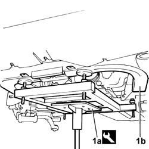
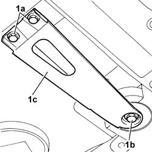
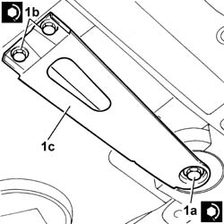

4410D16 BRACKET (ONE) fastening chassis to bodyshell - R.R.
- Path
- Procedures > 44 SUSPENSION AND WHEELS > 4410 FRONT SUSPENSION > 4410D FRAME AND CROSSMEMBER > 4410D16 BRACKET (ONE) fastening chassis to bodyshell - R.R.
- Kind
- repair procedure (removal / refitting; the operation number is the code)
- Applies to
- all engines; all production periods
- Interactive page
- https://sloeber94.github.io/elrnDB-lThss/en/#/177648
Applies to: all engines; all production periods
 Removing
Removing
 Refitting
Refitting- Position the vehicle on a lift.
- Raise the vehicle on the lift
1. Position the tool for supporting the power unit-chassis assembly (1a), complete with hydraulic jack, under the housings in the engine support frame (1b).
 | Description | Code | Function |
|---|---|---|---|
1a | Power unit support frame | 1.870.835.000 | Removing-refitting power unit |

Applies to: all engines; all production periods
1. Undo the two rear bolts (1a) and the front bolt (1b) fixing the bracket (1c) securing the frame to the bodyshell.

Applies to: all engines; all production periods
Refitting
Removing1. Position the bracket and tighten the front bolt (1a) and the rear bolt (1b) to the recommended torque.
 | Value - daNm | Fastening | Component | Ø |
|---|---|---|---|---|
1b | 5 | Bolt | FRONT SUSPENSION SUBFRAME | M10 X 1.25 |
| Value - daNm | Fastening | Component | Ø |
|---|---|---|---|---|
1a | 13 | Bolt | FRONT SUSPENSION SUBFRAME | M12 X 1.25 |

Applies to: all engines; all production periods
- Remove the tool supporting the power unit - chassis assembly
| Description | Code | Function |
|---|---|---|---|
. | Power unit support frame | 1.870.835.000 | Removing-refitting power unit |
- Lower the vehicle
- Remove the vehicle from the lift.